Energy Losses due to Friction in a Pipe
Overview
Investigated how wall friction turns into pressure (energy) loss in a pipe, the loss a pump or fan has to overcome in any hydraulic pipe, gas pipeline or ventilation duct. In the lab, a suction pump drew air through a 50 mm pipe fitted with an orifice flow meter, with pressure tappings 500 mm apart along the test section. The measurements were repeated for a smooth pipe and a sand-roughened pipe, then generalised using dimensionless groups.
My role
Individual work. I carried out the in-person lab, then wrote an individual technical report setting out how the Reynolds number, flow rate and friction loss in a pipe can be found from pressure measurements, with a full worked calculation.
Technical approach
- Measured the pressure drop across the orifice plate to find the flow rate, following the method in DIN EN ISO 5167-2, then the mean velocity and Reynolds number
- Measured the pressure drop along the 500 mm test length and rearranged the Darcy-Weisbach equation to find the friction factor
- Compared the smooth-pipe friction factor with the Blasius equation, and plotted friction factor against Reynolds number on the Moody chart for both pipes, checking the rough pipe against the Colebrook-White equation and reading off its relative roughness
- In the report, worked the full chain from an orifice pressure drop to mass flow rate, then used the Swamee-Jain equation for the friction factor and Darcy-Weisbach for the pressure loss over a 50 cm segment
Equations used
- Orifice flow: Q = Cd / √(1 − β⁴) · (πd²/4) · √(2Δp/ρ)
- Reynolds number: Re = ρūD / μ, with ū = Q/A
- Swamee-Jain: f = 0.25 / [log₁₀(ε/3.7D + 5.74/Re0.9)]²
- Darcy-Weisbach: Δp = f (L/D) (ρū²/2)
Given values
- Air: ρ = 1.2 kg/m³, μ = 1.81 × 10⁻⁵ Pa·s (20°C)
- 50 mm pipe, 31 mm orifice (β = 0.62), Cd = 0.63
- Orifice pressure drop ≈ 24 mmH₂O (≈ 235 Pa)
- Relative roughness ε/D = 0.002, segment L = 0.5 m
| Quantity | Result | What it means |
|---|---|---|
| Volume flow rate, Q | ≈ 0.0102 m³/s | From the orifice pressure drop |
| Mean velocity, ū | ≈ 5.2 m/s | Q divided by the pipe area |
| Reynolds number, Re | ≈ 17,200 | Well above 2,300, so the flow is turbulent |
| Mass flow rate, ṁ | ≈ 0.0122 kg/s | ρQ |
| Friction factor, f | ≈ 0.031 | About 12% above a smooth pipe (Blasius) at the same Re |
| Pressure loss over 0.5 m | ≈ 5.0 Pa | The energy the fan or pump must replace |
Rounded values; the report carries each step to six decimal places
Key insight
Once the flow is turbulent, the wall matters. At the same Reynolds number, a relative roughness of only 0.002 raised the friction factor by about 12% compared with a smooth pipe, and pressure loss scales directly with it. When sizing a pipe or duct, the assumed roughness is as important as the flow rate, so it should be checked rather than assumed.
Single-Stage Reciprocating Air Compressor
Overview
Designed and built a single-stage reciprocating piston compressor driven by a 20W DC motor. The objective was to charge a 0.1L receiver tank to the highest achievable pressure within the power constraint, converting energy as efficiently as possible. The project followed the full engineering design cycle from requirements and concept evaluation through to CAD, manufacture, and physical testing.
My role
I led the thermodynamic analysis and took primary ownership of the calculations, CAD development, and design review presentations. I completed the evaluation chart, morphological chart, functional model, and presentation content to ensure delivery along with completing the final CAD assembly and coordinated the testing session.
Calculations driving the design choices
Assumptions
- Compression modelled as polytropic, typical for small compressors (n = 1.35)
- Atmospheric inlet conditions; 1 bar pressure and 293 K
- Air treated as an ideal gas
- Mechanical efficiency 90% and clearance 6%, adopted from typical values
Geometry selection process
- Piston diameter and stroke were iterated to achieve 3 bar whilst keeping required shaft power below 20 W.
- The 50:1 gear ratio was selected as the minimum reduction that kept operating speed practical (290 rpm) without exceeding the power budget.
| Design inputs | Calculated results | ||
|---|---|---|---|
| Piston diameter | 20 mm | Design pressure target | 3 bar |
| Stroke length | 16 mm | Required shaft power | 15.3 W |
| Clearance volume | 6% | Power margin | 23.3% |
| Gear ratio | 50:1 | Maximum pressure force | 94.2 N |
| Operating speed | 290 rpm | ||
| Mechanical efficiency | 90% | ||
Technical approach
- Selected a polytropic cycle (n = 1.35) over isothermal and adiabatic assumptions, validating this against real-world piston compressor data and confirming an outlet temperature of 397K against the ONYX material (heat deflection limit of 418K)
- Reverse-engineered calculations from target outlet pressure of 3 bar, iterating piston diameter (16mm to 20mm), and stroke length (to 16mm) to maximise performance within the 20W constraint
- Identified that a cuboid cylinder head geometry would cause airflow clipping through the 20mm bore - redesigned as an angled head to allow full airflow, then iterated with the team to minimise dead volume
- Full CAD assembly produced in Siemens NX; components 3D printed in ONYX material
- Assembly and testing session: drilled structural holes from 4.2mm to 5.5mm on-site to resolve dimensional mismatch identified during fitting
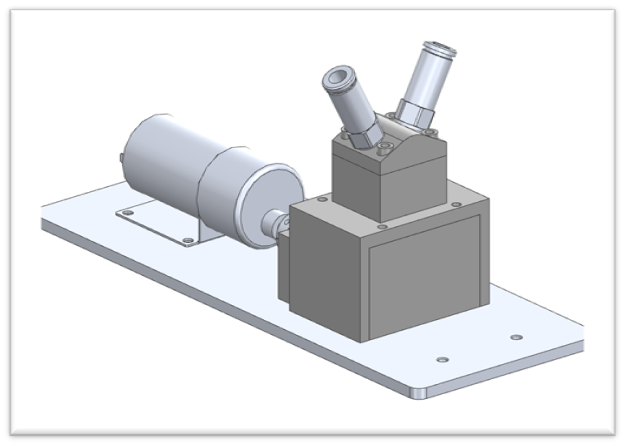
Key insight
The design review feedback was the most integral learning point during the project: our first CAD design was non-functional, and I took that as an opportunity to get deeply invested in the rebuild. Understanding why a design fails is more instructive than delivering one that works the first time, and I took that feedback to create a design which fulfilled more criteria than initially intended. Pressure testing was not available at this stage of the build. The 8/10 functionality score awarded by senior engineers reflects those design decisions.
Arduino Digital Spirit Level
Overview
Built a digital spirit level on an Arduino Uno that reads an accelerometer and gyroscope module over I²C, works out the tilt in two axes and reports it three ways: an RGB LED that changes colour, a buzzer that beeps faster as the tilt grows, and a servo that follows the tilt. A push button re-zeroes the level so it can measure relative to any surface.
My role
Team of three. I wrote most of the code, built the circuits and wrote most of the report's written answers.
Technical approach
- Started the sensor over I²C, read six bytes of raw acceleration data, combined each pair of bytes into a 16-bit value and divided by 16,384 to convert to g
- Calculated tilt from the direction of gravity: θx = atan(Ax / √(Ay² + Az²)), and the same for θy, converted to degrees
- Drove the RGB LED from the larger of the two angles: green below 5°, yellow from 5° to 15°, red above 15°
- Used Arduino's map() to shorten the pause between beeps from 500 ms at 5° to 50 ms at 90°, and mapped the X angle from −90°…90° onto the servo's 0°…180°
- Added a zero button (internal pull-up, triggered on the press edge) that stores the current angles as a reference, so all later angles are measured relative to that position
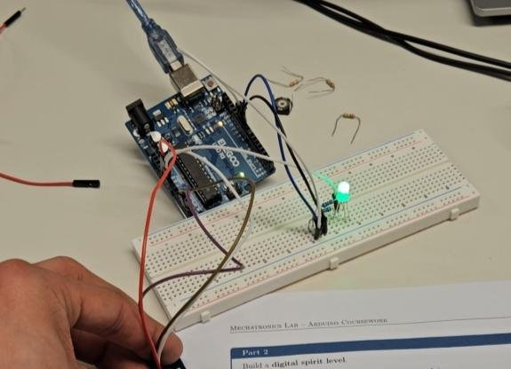
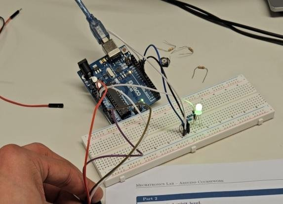
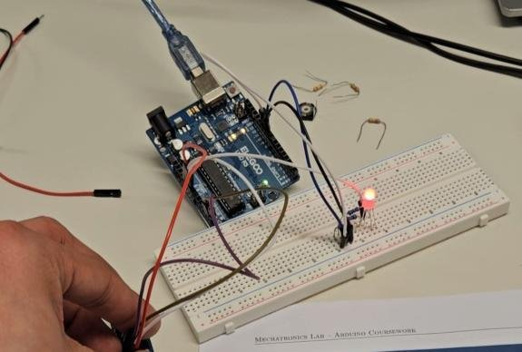
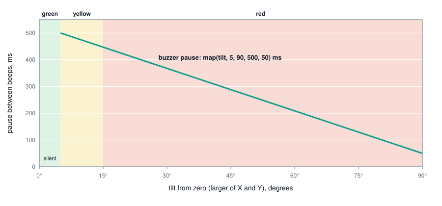
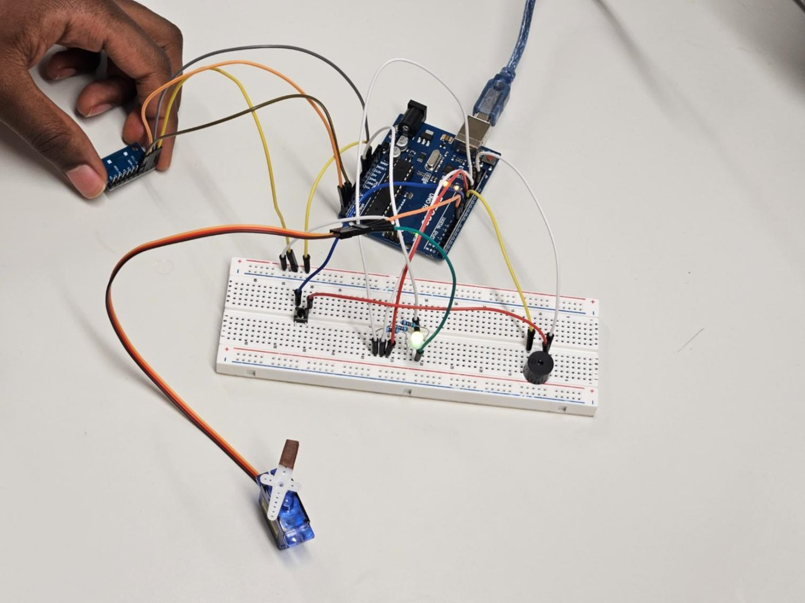
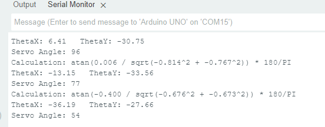
Key insight
An accelerometer measures every acceleration, not only gravity. Held still, gravity dominates and the tilt reading is reliable; once the device moves, vibration and motion leak into the angle. A gyroscope measures how fast the angle is changing, which stays accurate over short periods of movement, so combining the two gives a level that is stable at rest and still tracks smoothly in motion.
Vapour-Compression Refrigeration Cycle
Overview
Analysed a vapour-compression refrigeration rig running on R134a, the same cycle used in fridges, air conditioning and chillers. Using readings taken from the rig during the lab session, I converted the measured pressures to absolute values, plotted the full cycle on a pressure-enthalpy (P-h) diagram and calculated the compressor's indicated power from dynamometer readings, in a timed 40-minute assessment.
My role
Individual assessment. The rig was operated by the teaching assistant; the readings, pressure conversions, P-h plot, calculations and written answers were all my own.
Technical approach
- Converted gauge readings to absolute pressure (pabs = pgauge + patm): condenser 800 kPa to 9 bar, evaporator 180 kPa to 2.8 bar
- Plotted the four states on the R134a P-h chart and labelled each process: compression (1 to 2), condensation (2 to 3), expansion through the valve (3 to 4) and evaporation (4 to 1)
- Calculated the motor speed from the compressor speed and pulley ratio (777 rpm × 3.08 = 2,393 rpm), giving ω = 2πn/60 = 250.6 rad/s
- Calculated indicated power as PIND = ω (F − Ffric) Ldyno = 250.6 × (12 − 5) × 0.165 = 289 W
- Explained why gauge pressure must be converted first: the P-h chart is drawn in absolute pressure, so a gauge value leaves out atmospheric pressure and shifts every temperature and enthalpy read from the chart
| Refrigerant side | Rig and water side | ||
|---|---|---|---|
| Compressor suction (1) | 0.4 °C | Evaporator power | 665 W |
| Compressor delivery (2) | 36.4 °C | Motor power | 483 W |
| Liquid leaving condenser (3) | 28.5 °C | Cooling water in / out | 17.2 / 28.5 °C |
| Evaporator inlet (4) | 1.3 °C | Cooling water flow | 20 g/s |
| R134a mass flow | 5.5 g/s | Spring balance / compressor speed | 12 N / 777 rpm |
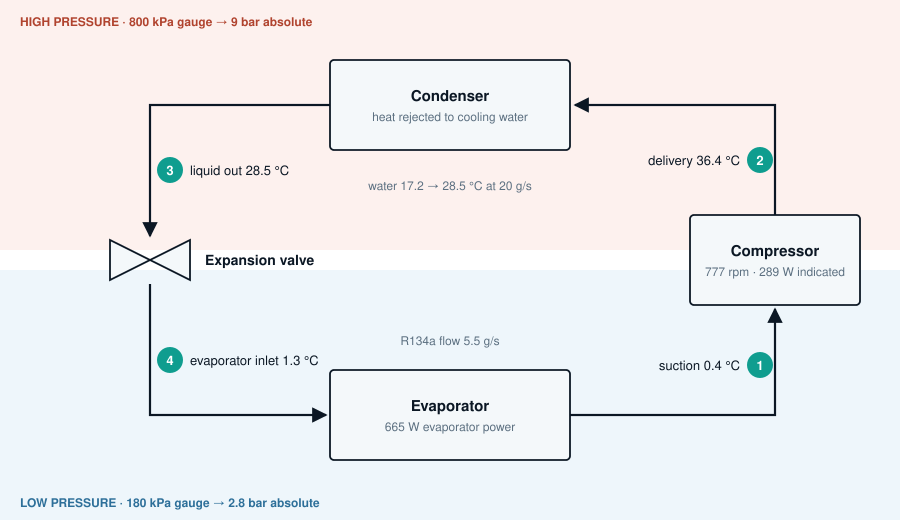
Key insight
The gauge-to-absolute conversion is the smallest step in the calculation, but everything after it depends on it. Read the chart at the gauge value and the evaporator sits a whole bar too low, so every saturation temperature and enthalpy that follows is wrong. Checking the inputs is part of the calculation.
Gas Turbine Emissions Analysis
Overview
Applied machine learning to a real-world gas turbine emissions dataset to predict CO and NOx outputs from ambient conditions and turbine operating parameters. The project covered the full ML pipeline: data cleaning, exploratory analysis, feature engineering, model training, hyperparameter selection (decision tree depth), overfitting analysis, and final evaluation on a held-out test set.
My role
Team of four. I carried out the data loading and cleaning, categorical encoding, exploratory analysis, feature engineering, outlier capping and baseline models, then built the advanced models (Random Forest, Gradient Boosting, SVR), compared all seven, ran the overfitting and underfitting analysis and the final test-set evaluation, and wrote the report.
The feature importance interpretation connected the statistical outputs back to combustion thermodynamics and led to the key finding that CO and NOx have opposing drivers.
Technical approach
- Dataset: 35,499 observations, 13 columns. Cleaned to 35,480 rows - removed 18 rows with missing values, corrected 2 rows with negative ambient pressure, removed 1 row with physically unrealistic 60°C ambient temperature
- Categorical encoding: combustion regime (Lean/Intermediate/Rich) and operating mode (Low/Part/Base Load) ordinally encoded to reflect natural ordering of combustion intensity
- Feature engineering: added temperature differential (turbine inlet minus outlet) as a proxy for energy extraction - high correlation with combustion efficiency and CO formation
- Models trained: Linear Regression, Ridge, Lasso, Decision Tree, Random Forest, Gradient Boosting, SVR
- Random Forest selected as optimal: NOx test R² = 0.822, CO test R² = 0.757 - validation and test performance closely matched, and outlier bounds were calculated on the training set only to avoid leakage
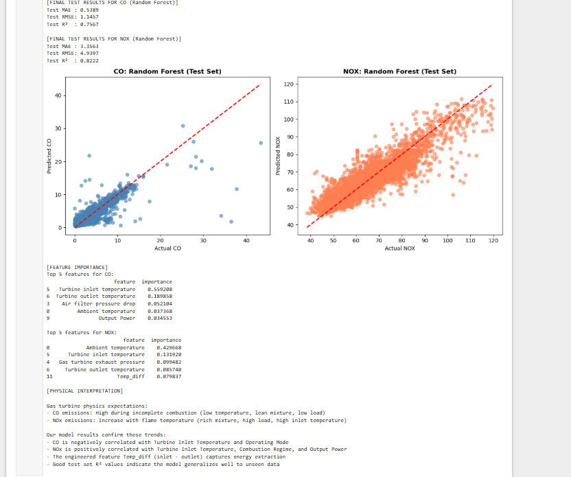
| Model | Target | Test MAE | Test RMSE | Val R² | Test R² | Diff. from Val R² |
|---|---|---|---|---|---|---|
| Random Forest | CO (mg/m³) | 0.540 | 1.146 | 0.732 | 0.757 | +0.025 |
| Random Forest | NOx (mg/m³) | 3.356 | 4.940 | 0.830 | 0.822 | -0.008 |
Key insight
The feature importance analysis showed turbine inlet temperature is the dominant predictor of CO (importance 0.56, correlation −0.71), while ambient temperature leads for NOx (0.43), with inlet temperature also contributing (0.13). Inlet temperature pushes the two pollutants in opposite directions: CO falls as it rises, while NOx rises with it. The conditions that reduce CO are therefore the conditions that increase NOx, so both cannot be minimised through the operating regime alone. That trade-off is a combustion constraint, not a modelling limitation.
Materials Selection for an Automotive Linkage Rod
Overview
Conducted a structured materials selection study for an automotive linkage rod - a suspension component subjected to axial tension, bending loads, and impact forces during vehicle operation. Used Ashby's materials selection methodology and Ansys Granta EduPack to derive performance indices, generate Ashby charts, shortlist six candidate materials, and rank them against both mechanical and manufacturing criteria. The coursework also reviewed the role of AI and machine learning in modern structural analysis.
My role
This was an individual piece of coursework completed independently. I defined the design requirements using the Ashby framework, derived both material performance indices, generated and filtered the charts in EduPack, and produced the final ranking of six shortlisted materials with written detail. The critical discussion, including the argument for aluminium over CFRP, reflects my own engineering judgement rather than conclusions from index values.
Technical approach
- Defined design requirements using Ashby's framework: function (transmit loads), objective (minimise mass), constraints (strength, stiffness, corrosion resistance, manufacturability), free variable (material)
- Derived two material performance indices: M1 = σy/ρ (strength-to-weight) and M2 = E/ρ (stiffness-to-weight)
- Applied filters in Granta EduPack: Young's modulus > 20GPa (to exclude soft polymers), density < 8000 kg/m³ (to exclude dense metals), then used slope lines on Ashby charts to shortlist materials above the performance threshold
- Six materials shortlisted: aluminium alloys, CFRP, titanium alloys, magnesium alloys, low alloy steel, stainless steel
- Ranking considered both index performance and practical manufacturing factors: castability, weldability, corrosion resistance, fatigue behaviour, and production cost
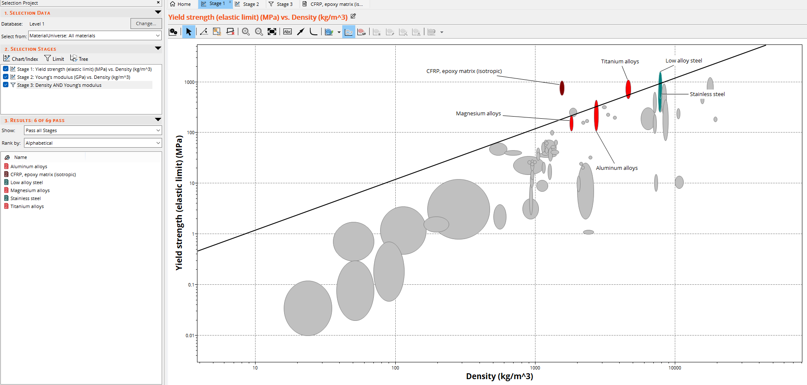
Final ranking and rationale
- Aluminium alloys: best overall combination of index performance, established automotive casting and forging processes, good corrosion resistance, lower cost. Ranked above CFRP despite inferior indices due to manufacturability and supply chain maturity
- CFRP: highest index values but penalised for excessive cost, recycling complexity, and variability under dynamic loading
- Titanium alloys: comparable performance to aluminium but significantly more cost-intensive to process
- Magnesium alloys: 2nd lowest density but weakest stiffness - risk of elastic deformation under service loads
- Low alloy and stainless steel (5th/6th): high strength and stiffness, but the highest density, so they gain little on weight-based indices against the lighter alternatives
| Rank | Material | Density (kg/m³) | Young's modulus (GPa) | Yield strength (MPa) | Reasoning |
|---|---|---|---|---|---|
| 1 | Aluminium alloys | 2,640–2,810 | 69–75 | 109–439 | Good balance of weight, strength and manufacturability |
| 2 | CFRP | 1,500–1,600 | 69–150 | 550–1,050 | Greatest stiffness and strength out of all materials, however not as reliable for dynamic loads |
| 3 | Titanium alloys | 4,430–4,790 | 110–120 | 470–1,090 | Same benefits as aluminium, however more cost intensive |
| 4 | Magnesium alloys | 1,780–1,840 | 42–46 | 109–216 | Lightweight, however not as strong |
| 5 | Low alloy steel | 7,800 | 200–210 | 469–1,600 | Resistant and strong, however much heavier than other materials |
| 6 | Stainless steel | 7,610–7,870 | 190–210 | 257–1,140 | Good stiffness and not prone to corrosion, though heavy and can be expensive |
Values sourced from EduPack
Key insight
The most important conclusion from this study was that materials selection is not numerical optimisation - it is engineering judgement. CFRP wins on every index. Aluminium wins in practice. Understanding the gap between those two statements and being able to argue it from first principles was important, as practical routes are not always the most optimal.
Finite Element and Analytical Evaluation of a Truss System
Overview
Modelled a planar truss system under static loading in ABAQUS using finite element analysis, then independently validated the results using the Direct Stiffness Method analytically. Compared nodal displacements from both approaches, identified sources of divergence, and critically evaluated the limitations of each method.
My role
Performed complete analysis - modelling truss structure in ABAQUS, deriving the local and global stiffness matrices using the Direct Stiffness Method by hand, comparing the two sets of results, and critically evaluating the sources of divergence. Beyond the core analysis, I cross-validated the finite element model against an independent hand calculation and, when the two disagreed, treated the 42–70% discrepancy and the U4 sign reversal as a modelling issue to investigate, identifying an incomplete reduced system as the likely cause. The report, calculations and critical discussion were produced independently.
Technical approach
- ABAQUS model: 2D planar wire structure, two-node linear truss elements, Young's Modulus 200GPa, cross-section 500mm² (doubled to 1000mm² for Element 1 to reflect 2AE axial stiffness specification)
- 100kN loads applied at nodes 3, 4, and 5; roller boundary conditions at nodes 1 and 6
- DSM: derived local stiffness matrices for all 11 elements, assembled global stiffness matrix, applied boundary conditions, and solved K·u = F to obtain nodal displacements
- Results compared across five displacement components: U1, V2, V3, U4, V4
- Initial percentage differences ranged from 41.8% (V3) to 69.8% (U1)
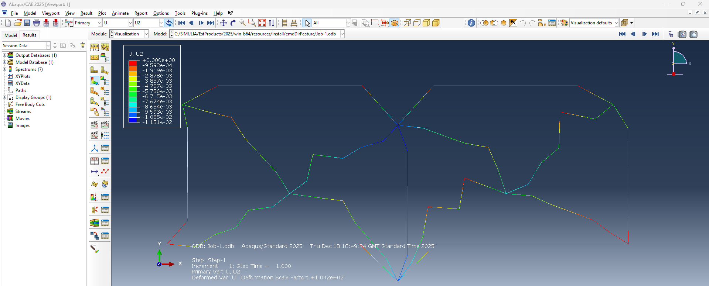
Critical finding
Cross-checking ABAQUS against a hand-derived Direct Stiffness Method exposed a 42–70% discrepancy and a sign reversal in U4. Because both methods rest on the same theory, I treated the gap as a modelling problem and reviewed my own working. My reduced system solved for only five displacements and omitted the load at node 5, which makes the hand model stiffer than ABAQUS and is the likely cause. The value of the exercise was the habit it reinforced: verify a result against an independent method, and investigate the disagreement.
AI in structural analysis
The report also reviewed how machine learning models - particularly neural networks - are being used to predict dynamic structural loads and optimise FEA mesh refinement, reducing computational time while improving accuracy for complex geometries. AI is currently a support tool in this domain, not a replacement for analytical methods.
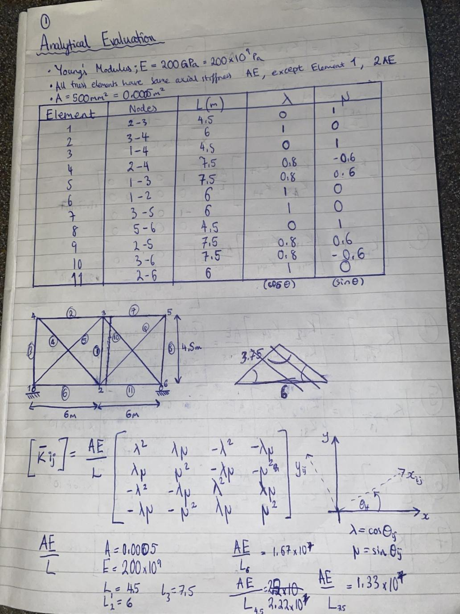
BAEMAX Sleep Apnoea Device
Overview
Designed and built a wrist-worn sleep apnoea detection device capable of monitoring blood oxygen saturation (SpO₂) throughout the night, detecting apnoeic events, calculating the apnoea-hypopnoea index, and prototyping wireless transmission and a dashboard concept. The project ran as a hackathon-style challenge with a six-day delivery window.
My role
I led group communication and project direction, ensuring the team made structured design decisions rather than defaulting to the first idea. I coordinated the concept evaluation process, contributed to the algorithm design and component selection, and ensured delivery of a functioning prototype within the deadline.
Technical approach
- Evaluated four competing concepts (RIP belt, nasal airflow sensor, pulse oximeter, microphone) using a weighted decision matrix across comfort, accuracy, reliability, cost, and ease of integration - pulse oximeter scored 4.43/5 and was selected
- Hardware: MAX30102 pulse oximeter sensor, ESP32 microcontroller (chosen over Arduino Nano for built-in Wi-Fi and Bluetooth), 3.7V LiPo battery (1800mAh), OLED display, 3D printed enclosure
- Algorithm: SpO₂ above 95% = normal; below 92% = apnoeic event flagged. System counts event cycles overnight and calculates apnoea-hypopnoea index (AHI)
- Data pipeline: ESP32 prototyped to transmit via Wi-Fi; web dashboard designed to display SpO₂ graph, wake-up count, and AHI with severity scale
- Battery life calculated at 1800mAh / 70mA average draw = 25.7 hours - sufficient for overnight monitoring
- Finger-mounted sensor connected to wrist unit to improve reading accuracy while distributing component weight
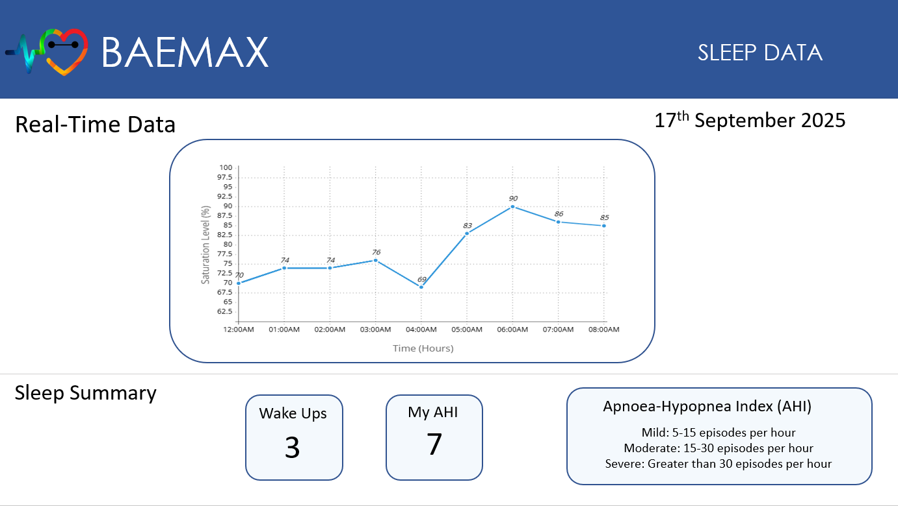
Key insight
Insisting on a structured decision matrix before building anything helped us build a solid foundation before proceeding with engineering decisions. The teams that built immediately had to redesign mid-week. The decision to use an ESP32 over Arduino Nano - made during that evaluation - was critical: its built-in Wi-Fi enabled wireless data transmission.
Makers Valley Housing Design - Engineers Without Borders UK
Overview
Designed an affordable, sustainable housing proposal for Makers Valley, Johannesburg, in response to an Engineers Without Borders UK brief. The area faces overcrowding, poor insulation, inconsistent water and electricity, abandoned buildings and rising rents. Our proposal combined stackable modular housing built from locally recycled materials with insulation retrofits for existing homes, delivered through a phased plan designed to create local jobs and avoid displacing current residents.
My role
I led the group and contributed to every stage of the project, from researching the community's challenges and developing both design proposals to the cost planning, phased delivery plan and final presentation. With uneven engagement across the team, I took responsibility for coordinating the work and making sure the full proposal was delivered.
Technical approach
- Two integrated proposals: stackable modular housing from locally sourced recycled materials (plastic, bamboo, compressed earth blocks), and insulation retrofits for existing homes
- Passivhaus-standard design, so the units don't need dedicated heating system through Johannesburg's short winters
- Plastic recycling route: collect, sort, clean, shred, melt and mould, using street waste that has built up in the area
- Retrofit priorities: walls (about 35% of heat loss and gain) and roofs (about 25%), using 50 - 100 mm of fibreglass or mineral wool
- Cost planning (rand): insulation R50–150/m² for materials plus R100–200/m² for labour; small modular unit R160,000–360,000; family unit R320,000–720,000; 10-unit pilot R1.6m–2.4m; 10-home retrofit pilot R200,000–400,000
- Three-phase delivery: Phase 1, audit and pilot (6–12 months); Phase 2, scale-up with trained local labour (12–24 months); Phase 3, review and community-led maintenance
- Target: rent at 30% of average local income against roughly 50% today, with an estimated break-even in 2–3 years
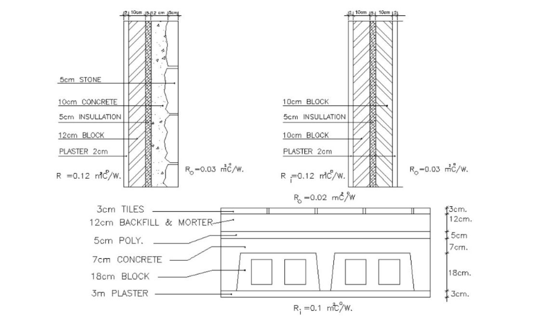
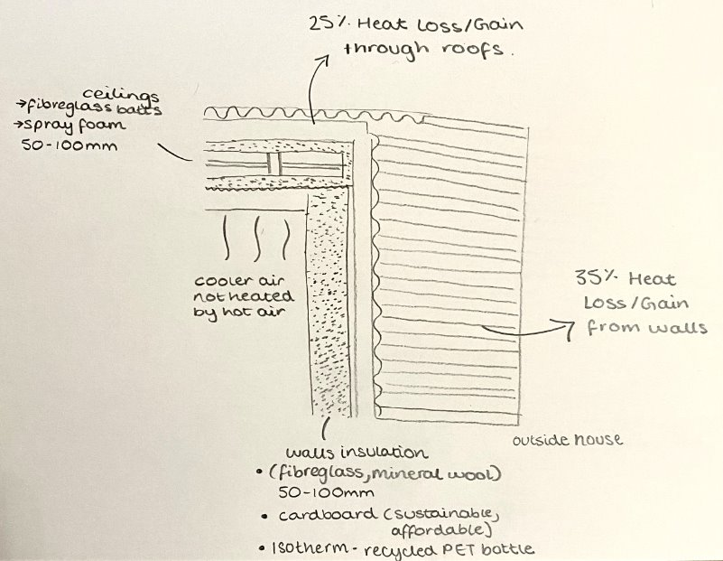
Key insight
Our first proposal, modular housing, only helped people moving into new homes. It did nothing for residents already living in poorly insulated houses. Recognising that gap is why we added the retrofit programme, so the design served existing and new residents alike. The same thinking shaped the local labour model and the phased rollout, which was designed to avoid displacement. An engineering solution that displaces the community it is meant to help is not a solution, and designing for the people affected mattered as much as the technical specification.
Software & tools
- Siemens NX
- ABAQUS
- Ansys Granta EduPack
- Python
- Arduino IDE
- Microsoft Excel
- Google Suite
- Proteus
Technical skills
- Thermodynamic Analysis
- Fluid Mechanics
- Finite Element Analysis
- Machine Learning
- Embedded Systems
- Materials Selection
- Mechanical Design
- Data Analysis
- Prototyping
Certifications
- Google IT Support
- Computer Networking
- Python
- AI-Powered Prototypes in AI Studio
- Learning Arduino: Foundations
- Learning Arduino: Interfacing with Analog Devices
- Learning Arduino: Interfacing with Hardware
- Technical Support Fundamentals